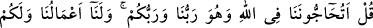
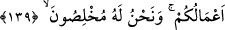
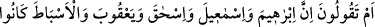
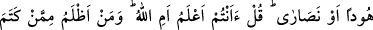
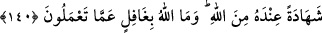

dostlarını ve âilesini terketmiş, kabristanlarda uzlete çekilmiş ve eski kötü hâlini de
değiştirmiş. Bu genç nihâyet, bu yöneldiği hal üzere vefât etmiş.
Seriyy şöyle devam etti: “Bir gün rüyamda onu gördüm. İpek ve atlas elbiseler içinde
eteklerini sürüyerek dolaşıp duruyordu. Bana da: “Allah seni hayırla mükâfatlandırsın,”
diyordu. “Allah sana nasıl muâmele etti,” dedim. “Beni cennetine koydu ve hiçbir
yönden de sorgulamadı,” dedi. Seriyy Sakatî’nin sözleri burada bitti.
139. De ki: Allah bizim de Rabbimiz, sizin de Rabbiniz olduğu halde, O’nun
hakkında bizimle tartışmaya mı girişiyorsunuz? Bizim yaptıklarımız bize, sizin
yaptıklarınız da size âittir. Biz O’na gönülden bağlananlarız.
Bu âyetin iniş sebebi şudur: Yahûdî ve Hıristiyanlar: “Peygamberler bizdendi ve
bizim dînimize uyuyorlardı. Bizim dînimiz daha eskidir.” dediler. Bunun üzerine Allah
Teâlâ Rasûlü’ne hitaben: “Ey Muhammed! Yahûdî ve Hıristiyanlar’a şöyle de: “Bizimle
Allah’ın dîni hakkında mücâdele ve münâkaşa mı ediyorsunuz? Onun gerçek dînini
Yahûdîlik ve Hıristiyanlık olduğunu mu iddia ediyorsunuz? Cennet’e girmeyi ve doğru
yola ulaşmayı ikisine mi bağlıyorsunuz? Bazan “Cennet’e ancak Yahûdî ve Hıristiyan
olan girecek.” Bazan da “Yahûdî ve Hıristiyan olunuz ki doğru yolu bulasınız.” mı
diyorsunuz? Her hâlükârda aslında mücâdeleye gerek yoktur. Çünkü sizin de, bizim de
işimizi çekip çeviren Allah Teâlâ’dır. O’nun emrine uygun olan bizim iyi amellerimiz
bize âiddir ve O’nun hükümlerine ters olan kötü amelleriniz de size âiddir. Böyle
olmasına rağmen kendinizin Allah’a daha yakın olduğunu nasıl söylersiniz? Biz bu
amellerimizi yaparken Yüce Allah’a tam bağlanırız ve tek isteğimiz O’nun rızâsıdır.
Durum bu iken nasıl olur da mücâdeleye girişir ve kendi bulunduğunuz yolun doğru
olduğunu iddiâ edersiniz? Bu kötü durumunuza rağmen nasıl olur da cennete girmeyi
ümit edersiniz? Kendiniz şirk koştuğunuz halde, insanları sadece O’na nasıl dâvet
edersiniz?” buyurmuştur.
İhlâs; ameli şirk ve gösterişten (riyâ) temizlemektir. Daha doğrusu ameli kulların
mülâhazasından arındırmaktır.